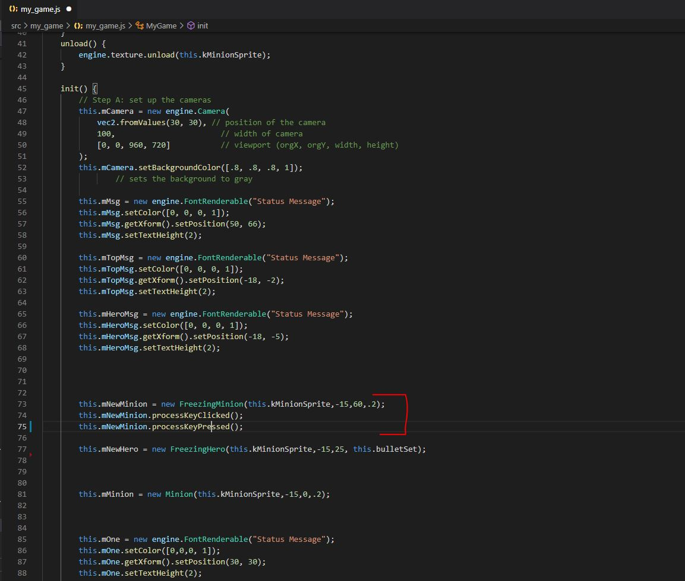

Description
The Real Time Pause (RTP) API is an api designed to handle the back end processing for RTP Game Objects and the different kind of states programmers might want to use with them. Programmers are given the freedom to design their RTP Game Objects to do anything within the bounds of RTP States. These states act like an update() function with their own init() function, and are meant to be called replacing a Game Object's normal update() function. When initializing an RTP Game Object you insert multiple RTP States and assign each state an id on how to use. In most scenarios there will be a standard update RTP State to be played when the RTP Game Object is not frozen, and a frozen RTP State to be played when the RTP Game Object is Frozen.
Each RTP Game Object States are meant to be used with multiple states with each state acting very modular. There will be states that only will be queued into action if a certain key is pressed and there will be states that are only queued only if a certain command is passed in from the standard my_game.js update() function. These differences will be identifiable through the use of "id"s that you feed into the constructor when first feeding a state into a RTP Game Object. Should be noted tha these states being queued are action queue based, meaning they get queued, then get played out when the RTP Game Object is no longer in a freeze state. Programmers are free to call each RTP Game Object's freeze state however they feel like in the my_game.js update() function.
Important Methods
RTP Game Object
| Functions | Description |
|---|---|
| update() | Called by my_game.js, handles a majority of the logic (freeze, saving input, etc..) |
| leftFreeze() | Called when exiting freeze state, calls read function |
| readInfo() | Reads the input of what was pressed during the freeze state and start running that state, if input is empty, just go back to regular update state |
| pop() | Finish the command first in queue, then delete it and go back to read function |
| processKeyClicked() | Tells the object to start keep track of keyClicked input when in freeze state |
| processKeyPressed() | Tells the object to start keep track of keyPressed input when in freeze state |
| saveKeyClicked() | Method that saves the KeyClicked information |
| saveKeyPressed() | Method that saves the KeyPressed information |
| getKeysClickedInfo() | Returns the array of information regard the input received |
| isFrozen() | returns true if RTP Game Object is in Frozen state |
| update() | method that is ran from mygame.js update() and handles a majority of the back end processing. Routes program to handle input, and run different states. |
*this.states is the array of states that are loaded in to use with this RTP Game Object. 0 will always be update state, 1 will always be freeze state, other states will be identified with “ids”
RTP Game Object States
- Made to be loaded into the RTPGameObject.js
- Has little necessary code: This is to encourage flexibility
- This class’ update and init are what will be running in place of a traditional update() function that game objects tend to have
| Methods | Description |
|---|---|
| update() | What will be running when update is called in mygame.js |
| init() | Called once before update is repeatedly called |
| pop() | Signals to RTPGameObject.js that this state is finished, and needs to be removed |
| getID() | Returns the id of this state |
*The field for “this.id” is very important and is initialized when being first fed into the RTP Game Object. It’s how the RTPGameObject.js will recognize which input signal to which state
Different Inputs
This API is capable of handling 3 different kinds of input: Key Pressed, Key Clicked, and Commands. Each of these inputs are only able to be processed when the RTP Game Object they are refering to is in it's freeze state. In addition to this Key Pressed and Key Clicked must first tell the RTP Game Object that it will be processing these types of information with a process() method. This is due to these types of input possibly taking unnescary memory usage, so are only used when wanted by the developer.
RTP Game Object States are each fed an id of which to associate its state to whatever input. Key Clicked are keyboard inputs and are recognized as lowercase letters/numbers /symbols ex: "a" or "5". Key Pressed are also keyboard inputs and are recognized as the same as Key Pressed, but with an additional exclamation mark ex: "!a" or "!5".
RTP Game Object States recognize commands with actual words, for example: "hero_attack". Commands are proccesed from the mygame.js update() function and are inserted into the action queue when the user calls the insertCommand() function extending from the RTP Game Object. This allows developers to issue commands not only from additional input, but also mouse clicks, button clicks, and more.
Tutorial
Create a new RTP Game Object by extending from the RTPGameObject.js file in the RTP API Folder. You would create this as you would with any other game object you would normally create.
Create two RTP Game Object States by extending from the RTPGameObjectStates.js file in the RTP API Folder. These two inital states will be known as the update state and the frozen state.
Insert these two states into the RTP Game Object, with the update state inserted first, then the frozen state inserted second
Create any number of additional states with their ids refering to a certain input. In this example I will only be using states that are recognized with commands
Now that your RTP Game Object is finished and has all of the desired states loaded into it, go to mygame.js (where your scene is) and initialize the RTP Game Object.
Indicate what type of information you are going to be processing, (I'm processing commands, so I don't need to indicate, but if you are processing KeyClicked or Key Pressed you need to indicate that like this)
Do the same thing you would with any other game object, draw(), init(), update() etc.
In the update() function of mygame.js, create a way to enter the freeze state of that RTP Game Object, in this case I made it by pressing P
If you are processing key clicked and key pressed, your done, the RTP Game Object will automatically process these kinds of input, if you are processing commands like I am in this example, you need to deliberately insert those commands in the mygame.js update() like this. I decided to make it a mouse click